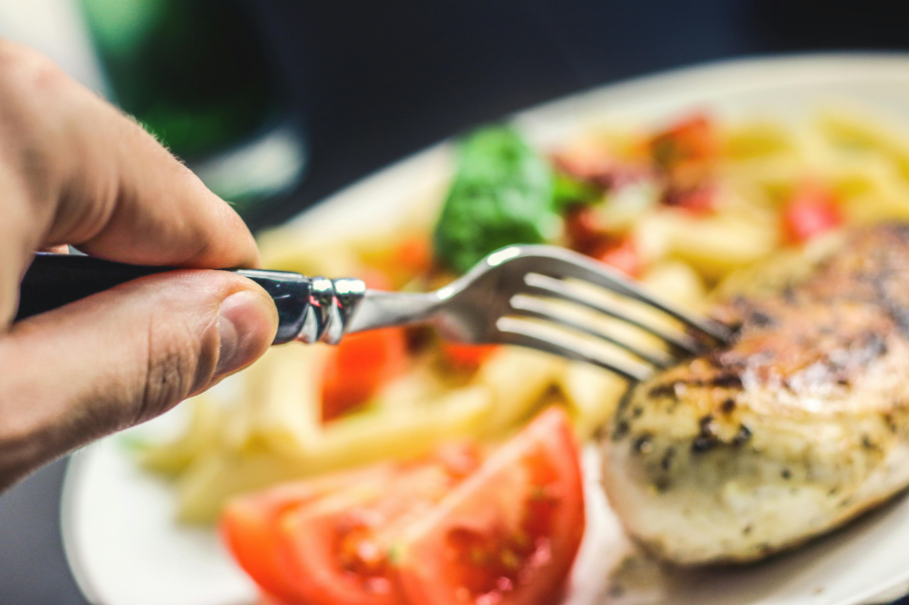

Ingredients
At Culinary Cove, our ethos is deeply rooted in the belief that exceptional cuisine starts with exceptional ingredients, That's why we are committed to using only natural, locally-sourced produce, free-range meats and sustainable caught seafood. Our culinary team works closely with local farmers and artisans to ensure that the ingredients we use are not only fresh but also ethically and sustainaly produced. This unwavering commitment to equally is evident in the vibrant flavors and wholesome nutrition that chareterize each dish on our menu.

Our use of natural ingredients goes beyond just a selling point; it's a promise to our guests and to ourselves, we see each meal as an oppurtunity to celebrate the bounty of nature